This document explains how to create a build system that replaces the one provided in the SDK. It provides information necessary for building CRO files and for the CTR applications that use them.
This document provides the minimum information necessary to create a build system equivalent to the one provided in the SDK.
For more information about creating a more flexible and sophisticated build system, see Build System Development Guide (for High-Level DLLs).
For information about the structure and usage of the build system provided by the SDK, see CTR-SDK Build System Manual (for DLLs).
This document assumes basic knowledge of CTR-SDK terms. See the CTR-SDK Glossary for a glossary of basic CTR-SDK terms.
Content in shaded boxes, as shown below, indicate a sequence to be entered on the command line.
command option1 option2
Do not enter text enclosed in angle brackets ("<" and ">") verbatim as part of the command syntax. Instead, substitute an appropriate entry for the placeholder description. For example, the string <CTRSDK_ROOT> indicates that you must enter the CTR-SDK installation path.
Text enclosed by square brackets ("[" and ]) is optional. In the following example, the -a parameter is optional and can be omitted.
command [-a]
Elements in the command sequence joined by the pipe symbol ("|") indicate available choices for a given parameter. In the following example, you can choose either the -a or -b option.
command -a|-b
Strings in the command sequence surrounded by parentheses (()) and followed by an ellipsis (...) indicate elements that can be repeated an arbitrary number of times. In the following example, the sequence of -a followed by a path can be repeated.
command (-a <PATH>)...
In this document, the names of Windows tools contained in the tools/CommandLineTools directory are abbreviated by omitting the leading ctr_ and the ending numeric value and file extension. For example, the abbreviation for ctr_makerom32.exe is makerom.
The following figure shows the build sequence when you do not use CRO. For example, if you were to create your application's AXF file from four source files and one static library. 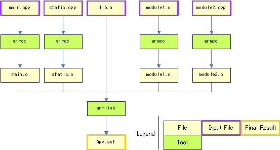 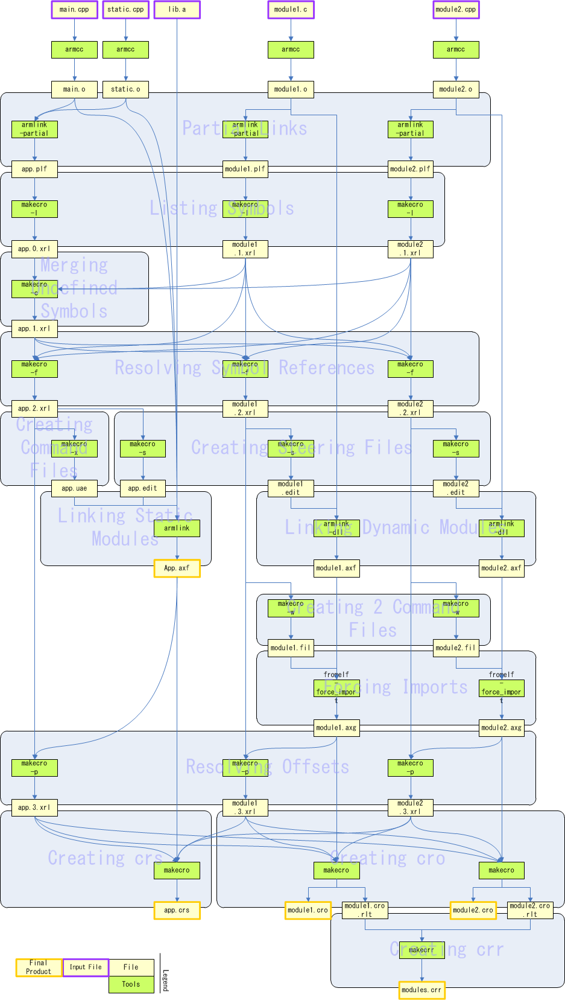
The following figure shows the changes when module1.c and module2.cpp are used to make CRO files.
Therefore, 14 additional build steps are necessary to make an existing build system compatible with CRO.
The commands to execute at each of these build steps are described in the following sections.
The build system uses armlink to partially link the project and get the symbols that the various modules reference and export.
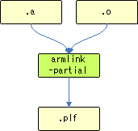
--no_scanlib --partial --vfemode=off --no_debug
If you are targeting a static module, do not designate static libraries as input files.
Create a list of symbols from the PLF files, and create the first XRL file. Use makecro to create the list of symbols.
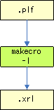
makecro to create a list of symbols as follows.
makecro -l [-a] [-i|-e] -o <INPUT_FILE> <PLF_FILE>
OUTPUT_FILE is an XRL file containing a list of the symbols referenced or defined by PLF_FILE. Specify the -a option if you are targeting a static module. Specify -i for a symbol export type of index, and specify -e for a symbol export type of offset. If you do not specify anything, the symbol export type is name.
This updates the XRL file for the static module and specifies that symbols not defined in any module are defined in the static module. It links standard C functions and SDK functions required by the dynamic modules into the static module. Use makecro to merge undefined symbols.
Use makecro to resolve symbol references as follows. (Although the following command is separated into multiple lines for readability, an actual command cannot contain newline characters.)
makecro
-c
[-i|-e]
-o <OUTPUT_FILE>
<STATIC_MODULE_XRL_FILE>
(-r <DYNAMIC_MODULE_XRL_FILE>)...
OUTPUT_FILE is an XRL file created by adding the symbols referenced by DYNAMIC_MODULE_XRL_FILE, but not defined by any module to STATIC_MODULE_XRL_FILE. Specify -i for an export type of index for the added symbols and specify -e for an export type of offset. If you do not specify anything, the export type of the added symbols is name.
For each symbol referenced by a module, find the module that defines it, and add this information to the XRL file. Use makecro to resolve the symbol references.
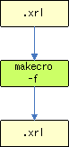
makecro to resolve symbol references as follows.
makecro -f -o <OUTPUT_FILE> <XRL_FILE> (-r <REFERENCE_XRL_FILE>)...
OUTPUT_FILE is the original XRL file (XRL_FILE) updated with the contents of REFERENCE_XRL_FILE.
You must execute this command on the XRL files for each module, using that module's file as XRL_FILE and those of the other modules as REFERENCE_XRL_FILE. Assuming that your project comprises static module App and dynamic modules Module1 and Module2, you would need to execute the following equivalent command on all three modules.
makecro -f -o App.f.xrl App.xrl -r Module1.xrl -r Module2.xrl makecro -f -o Module1.f.xrl Module1.xrl -r App.xrl -r Module2.xrl makecro -f -o Module2.f.xrl Module2.xrl -r App.xrl -r Module1.xrl
In the "Merge Undefined Symbols" step, you merged undefined symbols into the XRL file of the static module. Now, create a command-line options file to load these undefined symbols from the static library and export them. Use makecro to create the command file.
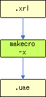
makecro as follows to create the command file.
makecro -x -o <OUTPUT_FILE> <XRL_FILE>
OUTPUT_FILE is a command file generated based on XRL_FILE.
Create a steering file to give the linker import and export instructions. Use makecro to create the steering file.
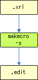
makecro as follows to create the steering file.
makecro -s -o <OUTPUT_FILE> <XRL_FILE>
OUTPUT_FILE is a steering file generated based on XRL_FILE.
Use armlink to link the static module, adding the specifications of the command file and steering file to the command-line options.
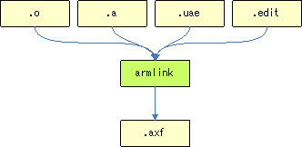
--base_platform --edit=<STEERING_FILE> --override_visi. --pltgot=direct --undefined_and_export=nnroAeabiAtexit_ --vfemode=off --via <COMMAND_FILE>
STEERING_FILE is the steering file you created in Create Steering Files, and COMMAND_FILE is the use file that you created in Create Command File.
Use armlink to link the dynamic modules, adding the specifications of the steering file to the command-line options.
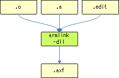
--base_platform --dll --edit=<STEERING_FILE> --no_cppinit --no_scanlib --override_visi. --pltgot=direct --scatter=<CTRSDK_ROOT>/resources/specfiles/linker/CTR.Ro.MPCore.ldscript --undefined_and_export=nnroControlObject_ --emit_non_debug_relocs
Set STEERING_FILE to the steering file you created in Create Steering Files. Set the --scatter option to CTR.Ro.MPCore.ldscript rather than CTR.Process.MPCore.ldscript.
Do not specify the following option.
--keep=nnMain
You also do not need to specify crt0.o as an input file.
You must also specify the following option if you use C++ exceptions.
--undefined=nnroEitNode_
Create a command-line option file to implement the changes for symbols for which there were changes to the references in Resolve Symbolic References. Use makecro to create command file 2.
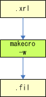
makecro as follows to create command file 2.
makecro -w -o <OUTPUT_FILE> <XRL_FILE>
Command file 2 is created based on XRL_FILE and generated as OUTPUT_FILE.
Implement changes to references for symbols for which there were changes to the references in Resolve Symbolic References. Use fromelf, which is included in ARMCC, to force the references.
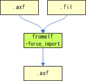
fromelf to force the references, as follows.
fromelf <AXF_FILE> --elf -o <OUTPUT_FILE> --via <COMMAND_FILE_2>
An AXF file for which the changes to the references in AXF_FILE were applied based on the specifications in COMMAND_FILE_2 is output as OUTPUT_FILE.
Get symbol-offset information from the AXF file that the linker created, and update the XRL file. Use makecro to resolve offsets.
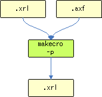
makecro to resolve XRL offsets as follows.
makecro <AXF_FILE> -p -o <OUTPUT_FILE> -d <XRL_FILE>
OUTPUT_FILE is the original XRL file (XRL_FILE) updated with offset information based on AXF_FILE.
Create the CRS file from the static-module AXF file and XRL file. Use makecro to create the CRS file.
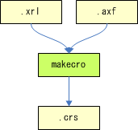
makecro as follows to create the CRS file. (Although the following command is separated into multiple lines for readability, an actual command cannot contain newline characters.)
makecro
<AXF_FILE>
-o <OUTPUT_FILE>
-d <XRL_FILE>
(-r <REFERENCE_XRL_FILE>)...
This creates OUTPUT_FILE as a CRS file from AXF_FILE, in accordance with the specifications of XRL_FILE. Use REFERENCE_XRL_FILE to resolve the offsets of other modules.
You must execute the command using XRL_FILE to designate the XRL file corresponding to the static module, and REFERENCE_XRL_FILE to designate the other XRL files. Assuming that your project comprises static module App and dynamic modules Module1 and Module2, you would use the following command to create the CRS file.
makecro App.axf -o App.crs -d App.xrl -r Module1.xrl -r Module2.xrl
Create the CRO files from the dynamic-module AXF files and XRL files. Use makecro to create the CRO file.
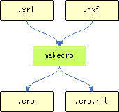
makecro as follows to create the CRO file. (Although the following command is separated into multiple lines for readability, an actual command cannot contain newline characters.)
makecro
<AXF_FILE>
-o <OUTPUT_FILE_1>
-t <OUTPUT_FILE_2>
-d <XRL_FILE>
(-r <REFERENCE_XRL_FILE>)...
This creates OUTPUT_FILE_1 as the CRO file from AXF_FILE, in accordance with the specifications of XRL_FILE. At the same time, it creates OUTPUT_FILE_2 as the cro.rlt file. Use REFERENCE_XRL_FILE to resolve the offsets of other modules.
You must execute the command using XRL_FILE to designate the XRL file corresponding to the target dynamic module, and REFERENCE_XRL_FILE to designate the other XRL files. Assuming that your project comprises static module App and dynamic modules Module1 and Module2, you would use the following command to create the CRO files.
makecro Module1.axf -o Module1.cro -t Module1.cro.rlt -d Module1.xrl -r App.xrl -r Module2.xrl
This step creates the CRR file by merging the .cro.rlt files. Use makecrr to create the CRR file.
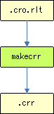
makecrr as follows.
makecrr [-d] -o <output file> (-r <.cro.rlt file>)...
OUTPUT_FILE is a CRR file merging the .cro.rlt files (CRO_RLT_FILE). Specify the -d option to store information necessary for debugging the CRO object in the CRR file.
Using the nnroUnresolved function with the static module requires additional build steps. These are the additional build steps that are required to use the nnroUnresolved function with the static module.
For more information about nnroUnresolved, see DLL Manual.
The following image shows the build sequence surrounding the creation of a CCI file or a CXI file from the AFX file of the application, when DLLs are used.
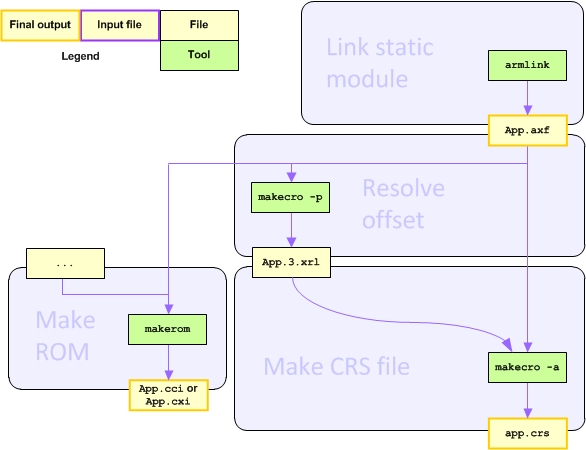
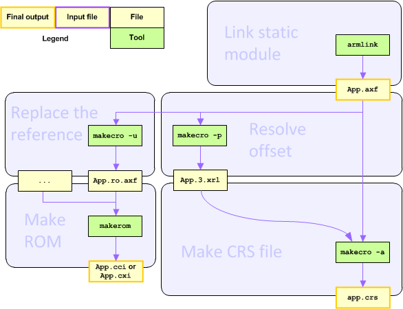
The commands to execute at each of these build steps are described in the following sections.
If the nnroUnresolved function is used with the static module, you must specify an additional command-line option in Create the Command File. The additional option is -y nnroUnresolved. Use makecro as follows.
makecro -x -y nnroUnresolved -o <OUTPUT_FILE> <XRL_FILE>
In the .axf file, overwrite the place where the DLL symbol is referenced to reference nnroUnresolved. Use makecro to replace the reference.
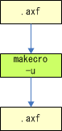
makecro as follows to replace the reference.
makecro -u nnroUnresolved -o <OUTPUT_FILE> <INPUT_FILE>
An AXF file based on the INPUT_FILE, but with the reference replaced, is created as the OUTPUT_FILE.
--no_debug as a necessary option in the "Partial Links" step.
--emit_non_debug_relocs as a necessary option in the "Link Dynamic Modules" step.
app.crs in the overall sequence chart.
-d option to Create the CRR File. Added the Revision History section.
CTR-06-0203-011-B
CONFIDENTIAL
{kind=link}
{kind=link}